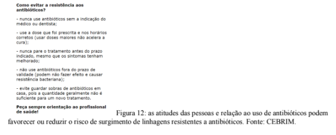

Capítulo 1
INDÚSTRIA METALÚRGICA: ARTEFATOS QUE MOLDARAM A EVOLUÇÃO HUMANA
QuestãoVocê já se perguntou como o desenvolvimento da metalurgia afetou nossa história enquanto espécie?
ContextualizandoAlgumas hipóteses sobre a origem da espécie humana afirmam que a manipulação de objetos foi um fato decisivo para o desenvolvimento da inteligência humana. Antes do domínio do fogo os hominídeos já utilizavam algumas ferramentas improvisadas com os materiais coletados na natureza (figura 1).
As evidências coletadas nos indicam que os primeiros a dominar o uso do fogo foram os neandertais e humanos. Com a sofisticação das técnicas de manipulação de materiais a partir do uso do fogo surgiu a metalurgia. O desenvolvimento de objetos para corte, proteção, preparação de alimentos e da terra para o plantio modificaram intensamente os hábitos e características humanas.
As mudanças que os seres vivos enfrentam ao longo das gerações são a matéria-prima para a evolução biológica.
A evolução biológica por vezes é mal interpretada, o que pode gerar alguns pontos de conflito. É muito importante, antes de começarmos a estuda-la, que tenhamos a clareza que a evolução biológica é um FATO. Isso quer dizer que existem inúmeras evidências de que ela ocorre. Como a evolução é um processo e não algo pontual, para observa-la é necessário que um período de tempo se passe, em geral esse período é longo e isso dificulta a nossa percepção. Felizmente, muitos pesquisadores dedicam suas vidas a observar e coletar evidências da evolução.
Esse fato (o processo de mudança das espécies ao longo do tempo, ou seja, evolução biológica) é explicado por diferentes TEORIAS CIENTÍFICAS.
PARA SABER MAIS...
Fatos, hipóteses e teorias são coisas diferentes!
Um fato é algo cuja existência pode ser constatada, as hipóteses são possíveis explicações de como ou porquê um fato ocorre. Quando as hipóteses são testadas de forma coerente e ética, podem ser organizadas em uma teoria científica (figura 2).

Dessa forma, uma teoria científica é a explicação mais adequada para um fato. A ciência se ocupa em testar continuamente a validade das teorias a luz de novas descobertas. Esse contínuo testar é a forma de complementar o conhecimento humano sobre alguma coisa. Faz parte do método científico cada vez que aprendemos algo novo poder revisitar tudo aquilo que já sabemos e avaliar sua adequação.
Se a evolução biológica é um processo lento (está acontecendo há bilhões de anos) como as pessoas a notaram e se interessaram em estudá-la? Quando observamos as espécies existentes algumas coisas chamam atenção: existem espécies muito parecidas entre si (como uma jaguatirica e uma onça pintada) e espécies muito diferentes (como uma laranjeira e um ser humano). Conforme vamos registrando essas semelhanças e diferenças começamos a observar que alguns pontos são comuns a todos os seres vivos do planeta.
Se a evolução biológica é um processo lento (está acontecendo há bilhões de anos) como as pessoas a notaram e se interessaram em estudá-la? Quando observamos as espécies existentes algumas coisas chamam atenção: existem espécies muito parecidas entre si (como uma jaguatirica e uma onça pintada) e espécies muito diferentes (como uma laranjeira e um ser humano). Conforme vamos registrando essas semelhanças e diferenças começamos a observar que alguns pontos são comuns a todos os seres vivos do planeta.
Pense em uma ninhada de cachorros, talvez você já tenha tido a oportunidade observar uma pessoalmente. Aqueles filhotes tem a mesma origem (mesma mãe e mesmo pai), mas eles não são idênticos entre si, possuem cores, tamanhos e comportamento diferentes (figura 3).
Essa variação vem de pequenas mudanças genéticas que acontecem na formação de cada óvulo e cada espermatozoide. Agora imagine essas mudanças se acumulando por milhares ou milhões de anos. A modificação das espécies ao longo do tempo é uma consequência lógica das mutações.
Evolução biológica é o processo através do qual ocorrem as mudanças ou transformações nas populações de seres vivos ao longo das gerações, dando origem a espécies novas.
PORQUE OS SERES VIVOS EVOLUEM?Nós vivemos em um planeta que não é estático. Modificações geomorfológicas e climáticas alteram os ambientes na Terra, até mesmo a ação humana contribui para essas modificações. Existem evidências que demonstram que a Terra passou por vários períodos cíclicos de aquecimento e resfriamento. As movimentações das placas tectônicas também são outro indício da modificação na estrutura dos continentes (figura 4).
Os seres vivos que sobrevivem a essas mudanças são aqueles que possuem características que os permitem continuar se alimentando e reproduzindo. Isso significa que aqueles que não possuem as características adequadas ao novo ambiente não irão sobrevivem e não deixarão descendentes.
Adaptação é entendida como uma característica que permite a sobrevivência em um determinado habitat. A sobrevivência, por sua vez, depende de três fatores principais: a alimentação, a reprodução e a defesa contra os inimigos naturais (figura 5).
A Seleção Natural é um mecanismo evolutivo que "direciona" a mudança das espécies para formas adaptadas ao ambiente.
QUEM É?No ano de 1809, nasceu na Inglaterra, Charles Robert Darwin (figura 6). Foi ele quem propôs a explicação mais aceita até hoje sobre como ocorre o processo de evolução das populações de seres vivos.
Em dezembro de 1831, com 22 anos, ele se juntou à tripulação do navio Beagle, cuja missão era mapear o litoral de regiões pouco conhecidas naquela época. Em cinco anos de viagem, Darwin ocupou muito de seu tempo coletando amostras de fósseis, observando espécies animais e vegetais, seu comportamento e suas adaptações.
Terminada a jornada, ele pôde analisar todos os milhares de dados coletados ao redor de todo o mundo. Como resultado dessa análise, Darwin propôs uma teoria que explica como ocorre a evolução biológica, hoje conhecida como Darwinismo.
O conjunto de ideias sobre o processo evolutivo foi publicado por Darwin em 1859 no livro intitulado A origem das espécies por meio da seleção natural. Nesta obra, Darwin reuniu inúmeras provas e observações científicas que evidenciavam a evolução das espécies e davam sustentação a um mecanismo responsável por ela.
Um erro muito comum é achar que o Darwinismo discute a origem da vida. Não é disso que a teoria trata, mas sim da origem das espécies, ou seja, como uma espécie pré-existente é "pressionada" pelo ambiente a se modificar e nesse processo dá origem a outras espécies.
A partir da literatura científica que já existia, Darwin deduziu que as populações animais crescem em um ritmo maior do que a natureza pode sustentar. Com isto, haveria uma “luta pela existência” determinando que nem todos os indivíduos de uma espécie fossem capazes de sobreviver e se reproduzir igualmente. Ele também notou que os descendentes de um ser vivo não são todos exatamente iguais. Ao contrário, sempre apresentam pequenas diferenças individuais (como o exemplo acima sobre uma ninhada de cachorros).
Segundo as ideias darwinistas, dentro de qualquer espécie de ser vivo, alguns indivíduos possuem características que os tornam melhores competidores. Eles têm maior chance de chegar à vida adulta e, consequentemente, de transmitir essas características aos seus descendentes através da reprodução.
Em síntese, a Teoria da Seleção Natural baseia-se em três ideias fundamentais:
Dessa forma, podemos esperar que, quanto mais modificações houver no ambiente, mais mudanças serão observadas nas populações que ocupam aquela região. Os indivíduos com características favoráveis serão selecionados, depois de algumas gerações, constituirão a maioria e a população já não será igual àquela inicial, terá se modificado. Contudo, se a mudança ambiental for muito expressiva, é possível que nenhum indivíduo da espécie seja capaz de sobreviver, o que provocará sua extinção local.
Vamos pensar em um exemplo (figura 8): o leite de vaca contém diversos microrganismos e para nos proteger devemos fervê-lo. Agora imagine que você apenas aqueceu o leite. O calor age como uma forma de seleção, os microrganismos menos resistentes morrem e aqueles resistentes tem a oportunidade de continuar reproduzindo Depois de algumas gerações, a população será diferente daquela que existia antes do aquecimento. Dizemos que houve evolução mediada por seleção natural.
Com a descoberta dos mecanismos de transmissão de características (genética), surge outra teoria que complementa o Darwinismo.
Às diferenças existentes entre indivíduos de uma mesma espécie dá-se o nome de variabilidade. Estas diferenças são mais facilmente observáveis em espécies de animais domésticos ou na espécie humana, pois nestes as tecnologias humanas conseguem amenizar a seleção natural. Observe um conjunto de pessoas (numa sala de aula, na rua, etc.) é muito simples de perceber que não existe uma idêntica à outra, para cada característica (cor do cabelo, altura, forma do corpo, cor dos olhos, etc.) existe uma enorme variabilidade.
As causas da variabilidade em populações naturaisAs mudanças no material genético são as causas da variabilidade em populações naturais. Por outro lado, a seleção natural é a consequência da maior ou menor adaptação dos diferentes tipos ao ambiente. Desta forma, a evolução é resultado do equilíbrio entre duas "forças" antagônicas: a variabilidade genética e a seleção natural.
As variações genéticas surgem nas populações independente da adaptabilidade dos indivíduos ao ambiente, mas elas apenas permanecerão na população se forem selecionadas (figura 10). Assim, se a seleção natural for muito intensa, a variabilidade da população será pequena.
Em suma, vários processos podem provocar a mudança de populações, mas eles têm um elemento em comum: todos eles são transmitidos para os descendentes.
AÇÃO E REFLEXÃO
Você já ouviu falar se microrganismos resistentes a antibióticos?
Eles são uma excelente oportunidade de observar os processos evolutivos acontecendo. Como o surgimento de novas gerações pode acontecer em minutos é possível observar processos evolutivos que em humanos demorariam milhares de anos para acontecer!
Analise o mapa conceitual abaixo (figura 11).
É possível reduzir os riscos de surgimento de bactérias resistentes (figura 12):
Após se informar sobre a resistência de antibióticos nas imagens acima tente responder: por quê esse é um exemplo de evolução biológica?